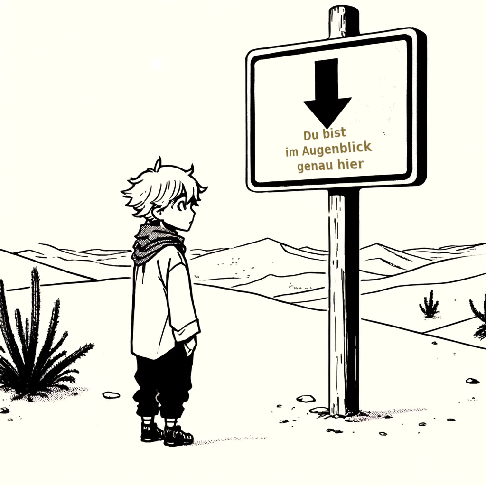
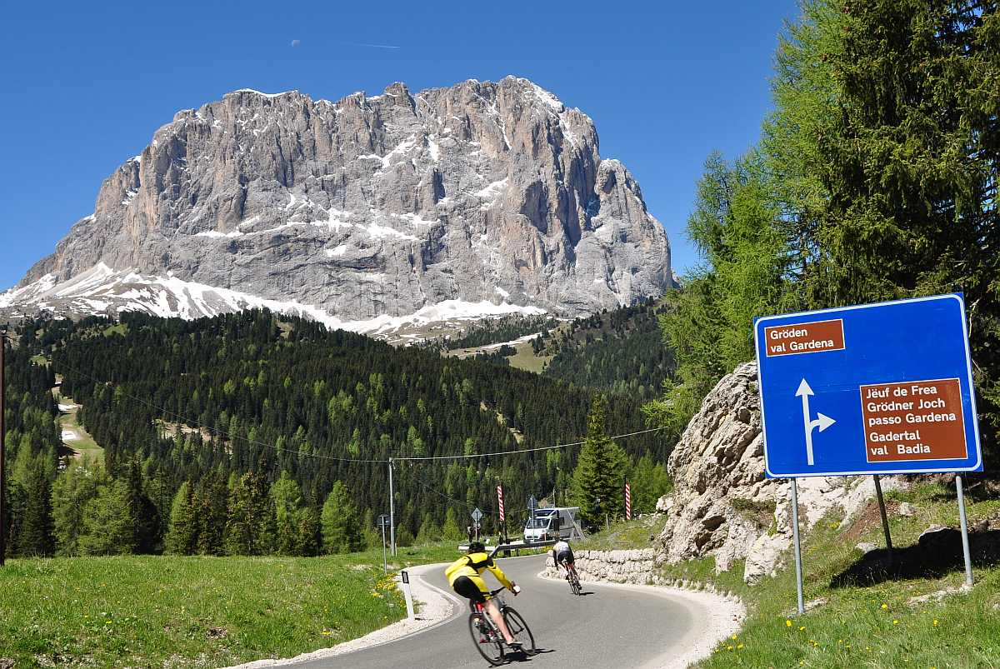

Die zentrale Aufgabe eines Koordinatensystems in Geoinformationssystemen ist die räumlich reproduzierbare Verortung diskreter und/oder kontinuierlicher Geoinformationselemente.
Über die unmittelbare räumliche Dimension hinausgehende Eigenschaften können den Geoobjekten als Attribute zugeordnet werden. Um die reale Welt abstrahieren zu können, muss unsere GIS-Software grundlegende Methoden zur Verfügung stellen, die das geographische Datentripel Zeit, Ort und Attribut konsistent nutzbar machen.
Die aktuelle Sitzung ist in mehrere Abschnitte gegliedert, um diese komplexe Materie schrittweise zu erarbeiten. Zunächst werden die Prinzipien der räumlichen Referenzierung (Georeferenzierung) anhand von Ortsnamen, der linearen Referenzierung und der exakten zweidimensionalen Verortung in einem Katastersystem besprochen. Anschließend werden die wichtigsten geodätischen bzw. kartographischen Methoden der räumlichen Zuordnung und Darstellung wiederholt und in den Kontext von GIS gestellt.
Raum und Zeit als Grundbegriffe
Zeit
Wir beginnen mit der Zeit. Sie stellt in weiten Teilen der Welt ein einheitlich strukturiertes Ordnungssystem dar. Konkret heißt das: Wir haben ein System von Zeitzonen und eine Konvention für die Datumsgrenze. Innerhalb der Zeitzonen wird die Zeit als lineares Kontinuum aufgefasst (vgl. Abb. 02-01). Auch die Verwendung anderer Kalender, die möglicherweise anders benannt und gezählt werden, kann linear auf die uns vertrauten Weltzeitzonen umgerechnet werden. Dies liegt in der physikalischen Auffassung begründet, dass die Zeit (mit Ausnahme archaischer/mythischer Zeitvorstellungen) ein lineares Bezugssystem darstellt. Auf einen Zeitpunkt folgt kontinuierlich der nächste. Es bedarf schon Einsteins Theorien, um die Linearität der Zeit aufzulösen. Für die mit Hilfe von GI-Systemen möglichen Beobachtungsskalen ist die Verwendung eines linearen Zeitverständnisses unproblematisch, jedoch im Gegensatz zur Raumdarstellung meist implizit bzw. optional implementiert.
 ## Der Ort
## Der Ort
Ohne die exakte Verortung beliebiger Orte ist ein GIS ziemlich nutzlos, da wir nicht in der Lage sind, räumlich zu messen, Eigenschaften räumlich zu vergleichen oder auch nur die Eigenschaften bestimmter Objekte geographisch darzustellen (Abb. 03-02). Für den sinnvollen Einsatz von GI-Systemen ist die korrekte Verortung von Geoobjekten - oder anders ausgedrückt - die Georeferenzierung eine zentrale Technik. Für diesen Vorgang gibt es eine Reihe ähnlicher Begriffe. Man spricht von Georeferenzierung, Geolokalisierung, Verortung oder moderner von Geotagging. Allen Begriffen ist gemeinsam, dass Merkmalsausprägungen mit geographisch identifizierbaren und kartographisch darstellbaren Positionen verknüpft werden.

Prinzipien der Raum-Zeit-Kodierung
Namen und Adressen
Orte durch Benennung und Beschreibung identifizieren und lokalisieren zu können, gehört zu den ältesten Kulturtechniken der Menschheit. Wir haben gelernt, dass sich Geoinformationen von anderen Informationstypen dadurch unterscheiden, dass sie eine räumliche Komponente enthalten (Abb. 03-03).

Die Kombination aus Namen und Zahlen, Deutschhaustrasse 10 in 35032 Marburg, ist die postalische Codierung für das Gebäude des Fachbereichs Geographie in Marburg. Auch wenn nicht jeder in der Lage ist, eine so verschlüsselte räumliche Position zu entschlüsseln, so gibt es doch ein weltweites Netz von Experten, die mit Hilfe dieser Codierung einen Brief vom Reisebüro Maluti Travel & Tours in Maseru, Lesotho zum Deutschen Haus in Marburg transportieren können. Umgekehrt gibt die Codierung Maluti Travel & Tours, POB 14889, 0100 LNDL Building, Kingsway, Maseru Lesotho die räumliche Position dieses Reisebüros an. Vielleicht kennen Sie aus Interesse oder Zufall die geographisch codierte Position des Deutschhauses in Marburg, aber die Position des LNDL Building in Maseru kennen Sie mit an Sicherheit grenzender Wahrscheinlichkeit nicht. Auch der Postbote kennt mit Sicherheit nicht die geographischen Koordinaten der Empfängerorte, die er täglich anfährt - und doch kommt die Post (meistens) zuverlässig an.
Das räumliche Bezugssystem hierfür funktioniert anders als über geographische Koordinaten, nämlich über Namen. Es ist eine Kette von Namenskodierungen vom Nationalstaat über die Region bis hin zum Gebäude. Wenn sich dieser Name ändert, z.B. von Karl-Marx-Stadt zu Chemnitz, bleibt der geographische Raumbezug natürlich erhalten. Natürlich gibt es auch Ortsnamen, die mehrfach vorkommen, z.B. London oder Neunkirchen. Eine eindeutige Referenzierung nach dem vorgestellten System ist nur dann möglich, wenn der Ortsname durch ein übergeordnetes Ordnungssystem eindeutig identifiziert werden konnte. Die wichtigste Schlussfolgerung ist, dass in GI-Systemen zur Vermeidung von Redundanzen, Fehlern und Unsicherheiten für die Referenzierung unbedingt ein möglichst allgemeingültiges und aussagekräftiges System verwendet werden sollte (so hat die Thurn und Taxis Post 1853 in Deutschland Ortsnamen mit einem Zahlenschlüssel kodiert, der eine abstrakte und nachvollziehbare Identifikation der räumlichen Lage dieser Orte ermöglicht).
Lineare metrische Lokalisierung
Mit den Postleitzahlen haben wir bereits ein System zur systematischen Kennzeichnung geographischer Orte kennen gelernt. Stellen wir uns nun folgende Situation vor (Abb. 03-04):

Während der Zustellung des Briefes in Flensburg bleibt der Post-LKW auf der Bundesautobahn 7 liegen. Der Fahrer ist mit seinem Handy im Funkloch und muss (natürlich nach Absicherung der Pannenstelle) zu Fuß zu einer Meldestelle gehen. Auf seinem Weg kommt er an einem kleinen blauen Schild mit der Aufschrift 64.0 vorbei. An der Meldesäule angekommen, meldet er seine Panne und teilt mit, dass sich das Pannenfahrzeug kurz hinter km 64,0 in Fahrtrichtung Norden hinter der Anschlussstelle Soltau befindet und den rechten Fahrstreifen blockiert. Wenig später hören Sie im Verkehrsfunk:
“1,5 km Stau zwischen der Anschlussstelle Soltau und der Anschlussstelle Bispingen wegen eines defekten LKW. Der rechte Fahrstreifen ist blockiert. Bitte vorsichtig fahren”.
Dieses alltägliche Beispiel verdeutlicht die Kombination von Namen und metrischen eindimensionalen Positionsangaben als geographisches Ortungssystem. Da Sie die Autobahn während der Fahrt nicht verlassen können, orientieren Sie sich von Ausfahrt zu Ausfahrt (Name oder Nummer der Ausfahrt). Die Informationen aus dem Verkehrsfunk reichen daher aus, um den Stau hinreichend genau zu lokalisieren.
Der Polizei oder dem Pannendienst reicht diese Angabe nicht aus. Sie möchten z.B. für die Organisation der Bergung oder für die Gefahrenabschätzung die exakte Kilometerangabe haben. Die Kilometrierung ist eine metrische Ortsangabe, die nur eine Dimension benötigt, da sie sich auf einer eindeutig definierten Strecke befindet. Eine solche Ortsangabe ist metrisch, also quantitativ. Es misst die Entfernung von einem definierten Startpunkt/Startort zu einem Zielpunkt/Zielort. Diese sogenannte lineare Referenzierung kann nur auf eindimensionale Geoobjekte angewendet werden. Davon gibt es in unserem Alltag eine Vielzahl. Angefangen von Autobahnen oder Eisenbahnlinien bis hin zu Rohr- und Versorgungsleitungen sind alle linearen Strukturen, die sich als Netze darstellen, linear referenzierbar.
Versuchen Sie diesen Zusammenhang zu rekapitulieren und verschaffen Sie sich einen Überblick über die Störungssituation bzw. die Örtlichkeit. Navigieren Sie mit Google Earth zur Örtlichkeit nahe Soltau.
Betrachten Sie nun die folgende Abbildung der Streckenkarte der BAB 7, die genau den gleichen Raum zeigt.

Navigieren Sie nun zur [Linienkarte A7] (http://www.autobahnatlas-online.de/A7.htm) der BAB 7 und analysieren Sie die Art der metrischen Verortung. Nutzen Sie die Legende, um die Fülle der räumlich verorteten Informationen zu verstehen.
Katasterpläne - Geometrisch exakte maßstäbliche Darstellung des Raumes
Im vorangegangenen Kapitel haben wir die eindimensionale metrische Referenzierung kennen gelernt. Als zweidimensionale Erweiterung gibt es weltweit sogenannte Kataster. Es ist üblich, Kataster in Katasterplan und Katasterbuch zu unterteilen (Abb. 03-06). In Deutschland (wie in den meisten Ländern) ist die Führung und Pflege hoheitlich durch die Vermessungsämter geregelt.

Der Grund dafür liegt in der Notwendigkeit eines rechtsgültigen Nachweises von Eigentumsrechten (bekanntlich ein heikles Thema). Kataster existieren seit dem Altertum für den persönlichen Nachweis der Steuerpflicht auf den Besitz von Immobilien. In den Kopfsteuerregistern wird die Steuerpflicht für Vermögen oder Grundstücke namentlich an eine Person gebunden.
Seit der Erfindung und Durchführung der exakten Vermessung der Welt durch Carl Friedrich Gauß (1777 - 1855) werden Kataster als flächendeckende Beschreibungen aller Grundstücke eines Landes geführt. Für Deutschland wurde dies durch den Code Civil Napoleons rechtlich eingeführt und vom preußischen Staat vorbildlich umgesetzt. Das Liegenschaftskataster gliedert sich in einen beschreibenden Teil, das so genannte Liegenschaftsbuch, und einen graphischen Kartenteil, die Liegenschaftskarte. Beide beschreiben die geometrische Lage, die Bebauung, die Grundstücke und deren Nutzungsart und Größe sowie die Eigentumsverhältnisse und Rechtslasten. Die Abbildung des Katasterplans stellt beispielhaft einen solchen grafischen Plan dar. Betrachtet man diese Abbildung genauer, wird das Wort Plan verständlich. Die Flurstücke sind zwar geometrisch exakt dargestellt, es fehlt jedoch jedes geographische Bezugssystem. Stattdessen kann man für jede dargestellte Fläche eine Reihe von Zahlen erkennen. Diese Zahlen verweisen auf die entsprechenden Eintragungen im Grundbuch. Analog zur linearen Referenzierung, die eindimensionale Geoobjekte metrisch referenziert, wird bei Katasterplänen eine zweidimensionale metrische Referenzierung vorgenommen.
Verdeutlichen Sie sich diesen Zusammenhang noch einmal, indem Sie sich das Karten- bzw. Satellitenbild des heutigen Bukowsko in Google Maps ansehen. Vergleichen Sie dazu den Katasterplan von 1906.
{kind=link}